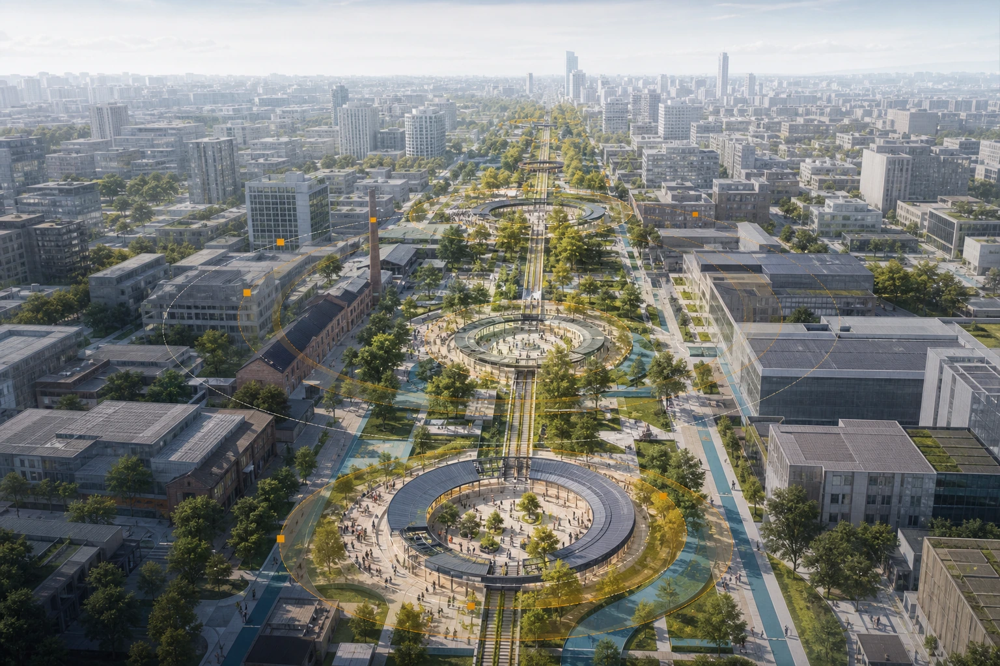
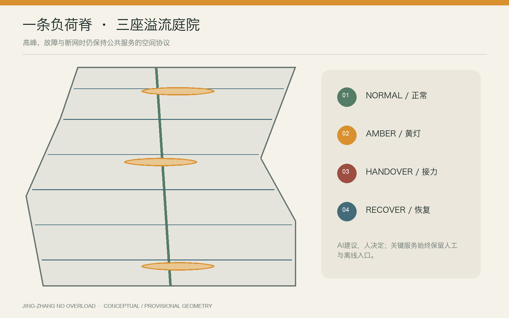
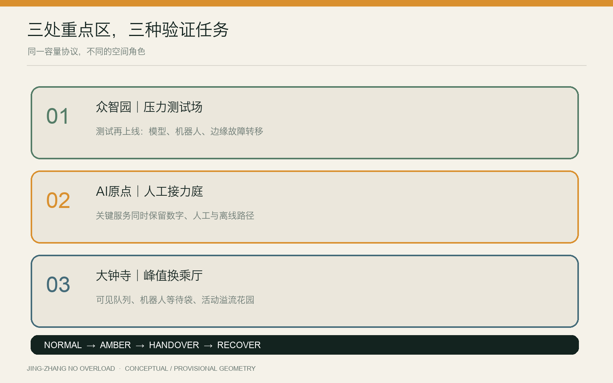
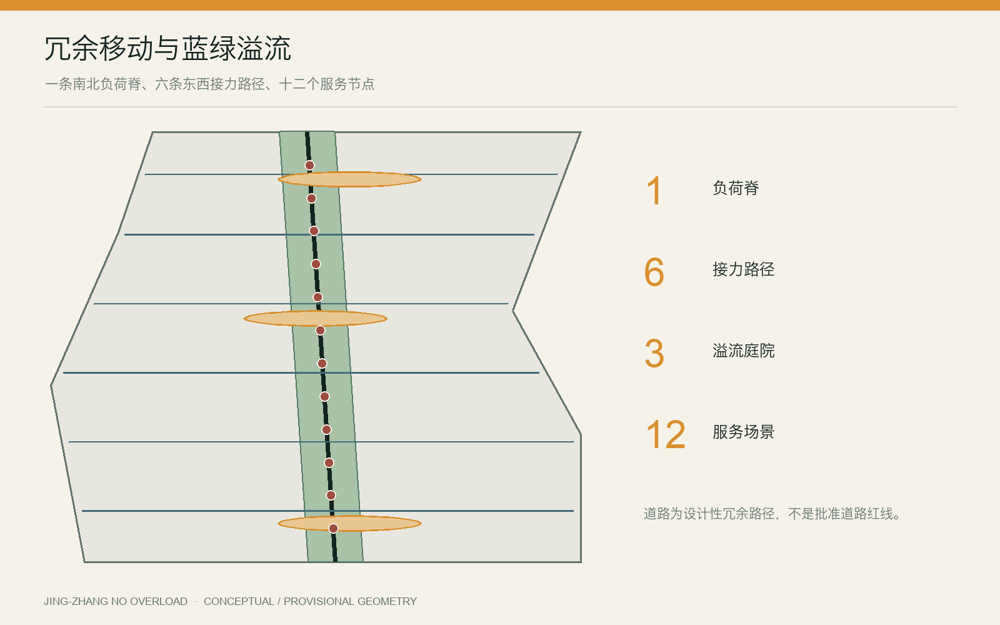
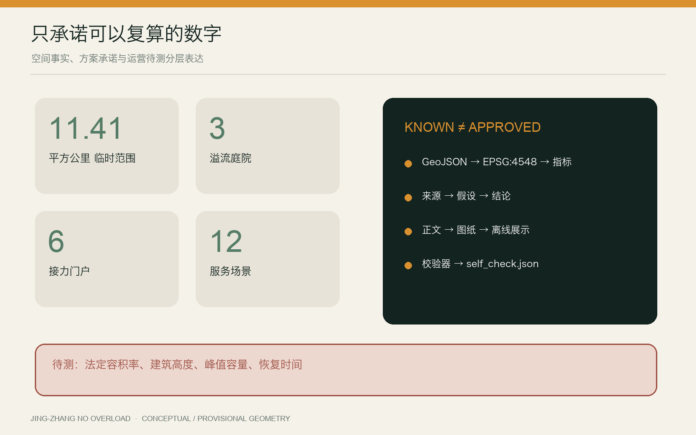

压力测试场
模型、机器人与边缘故障转移：先测试，再上线。
让城市在高峰、故障与断网时，仍然服务每个人。

一套城市协议，不是另一座智慧地标。
公开容量与入口
限制非必要负荷
切换人工与离线服务
由人确认恢复
AI建议，人决定；关键服务始终保留人工与离线入口。

模型、机器人与边缘故障转移：先测试，再上线。
关键公共服务同时保留数字、人工与离线路径。
可见队列、机器人等待袋与活动溢流，保护城市日常。

它们构成可审查的组合：三项测试、六项日常服务、三项长期运营，并共用同一降级协议。


正式包覆盖用地分区、交通慢行、蓝绿公共空间、建筑、更新项目、AI 场景、来源与假设；机器检查状态写入 self_check.json。
公告与任务书控制范围；临时边界只支持讨论；全球案例只迁移机制、不迁移规模；法定指标与现场容量继续待补。
法定容积率、高度、正式边界、市政容量、峰值容量与恢复时间，均等待正式数据与现场测试。